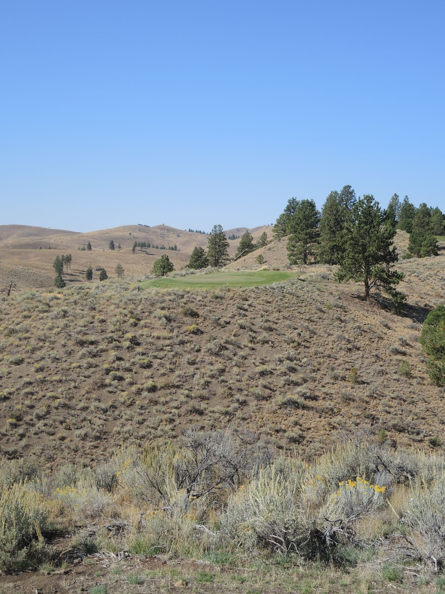

We roll into the ranch Thursday and go straight at the Gauntlet. There’s a placeholder tee time at 1 PM, but the course is wide open — we tee off whenever the crew is in. Warm-up round: it doesn’t count toward the five tournament rounds, but bragging rights are live.

The Hideout (pro shop & cafe) serves breakfast and lunch with a full bar and a deck view of the
valley. Grass driving range, pitching & sand area, and putting green if you want to loosen up first.
Rentals: clubs, pull carts, and goats. Head pro: Dave Lewis (PGA).
10000 Rendezvous Lane, Seneca, Oregon 97873 • (541) 573-5150 •
www.silvies.us
Gauntlet in the evening, homemade gyros at the house after. Welcome to the Showdown.